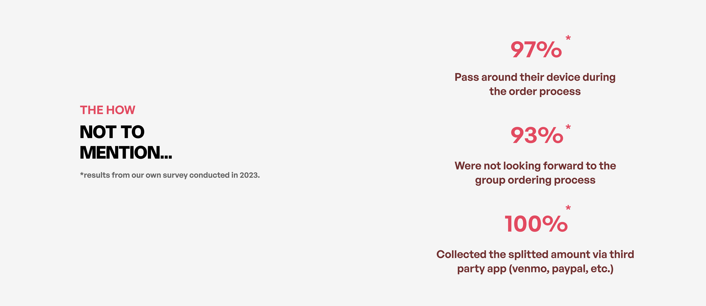
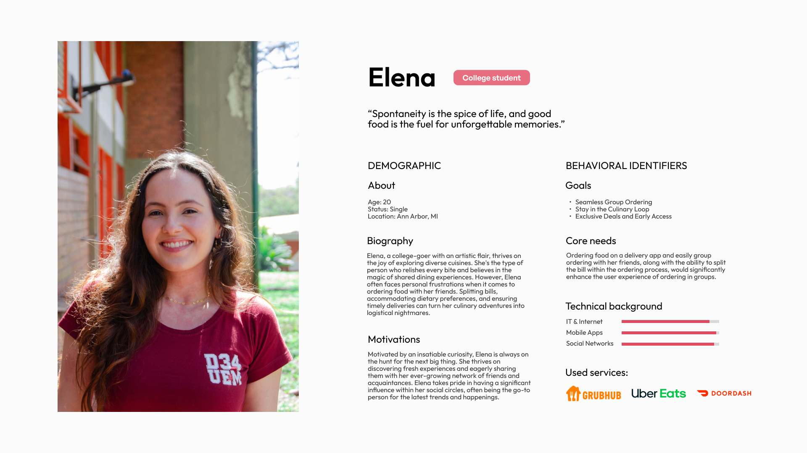
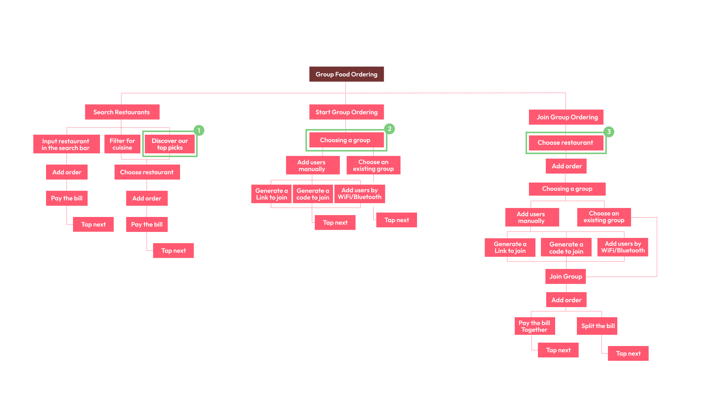
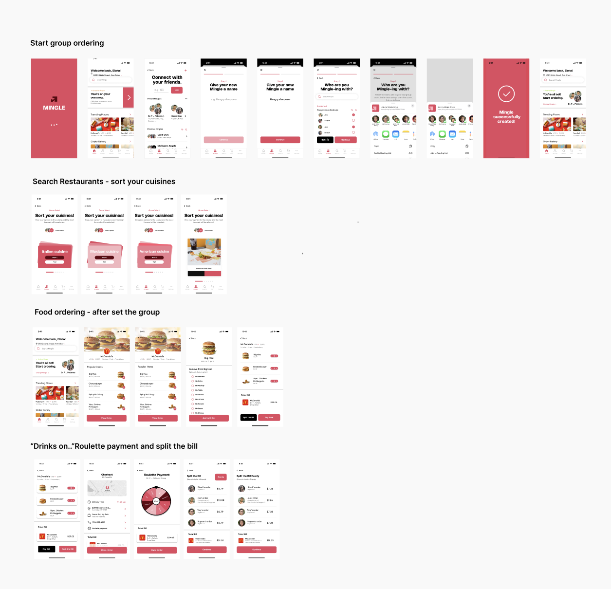
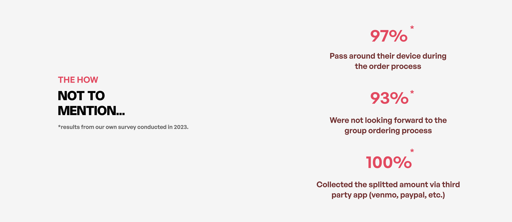
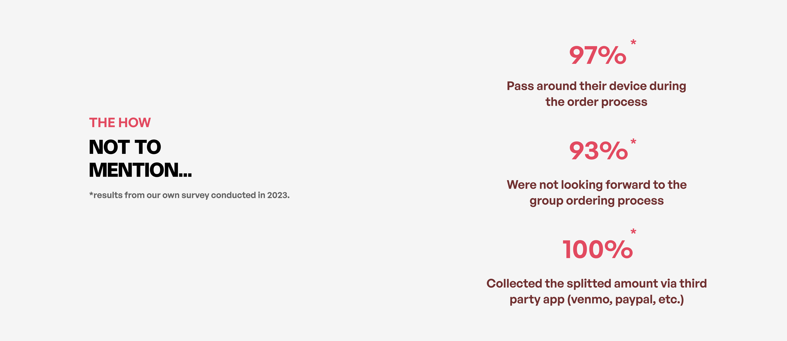

The Question: Users go from Point A to Point B in a Delivery App.
What is the shortest flow possible and what path did the user take?
2. Cognitive Task Analysis
The Question: What kind of feature did you wish you could use but was not available?
Did the process of ordering food take too long?
Was there too much input you had to take?
3. Collage
The Question: Rate the pictures from 1-6 with how much it resonates with you
when thinking of going through the process of ordering food in a group setting.
1 being “resonates the most with me” and 6 being “ does not really resonate with me”.

The Solutions
1. Start/ Sign up
The user opens the app and invites their friends to place an order together within the app.
Users without an account can easily join the group without any hassle.
2. Search Restaurants - sort your cuisines
The user can easily discover restaurants with an intuitive and enjoyable feature.
This feature is designed for those unsure of what to eat together, effectively reducing the time needed to make a decision.
3.Food Ordering
The user can customize their order based on their allergies.
After user testing, we added these features to enhance user interaction within the app,
allowing users to easily add or cancel their orders with a simple click on the icons.
4.“Drinks on..”Roulette payment and split the bill
Users can easily split their bills evenly by clicking the "Split Bill" button.
Users have the option to play roulette games by choosing someone who will pay the bill, which increases their enjoyment.
The Ideation
Persona & Journey map
Our app caters exclusively to on-campus students
who are known for their spontaneity, dynamism, and social nature.
They crave a food delivery experience that aligns with their vibrant lifestyle,
making group ordering an enjoyable and engaging activity.

Based on the interviews, I created a journey map that complements persona,
Elena, delving into the distinct stages of her journey and focusing on the challenges she faces in her ordering process.
It addresses her unique needs throughout this process and illustrates how the proposed solutions could enhance her overall experience and effectively fulfill her goals.
User Flow
After brainstorming, we created a user flow to organize the structure of
the mobile app that will guide users in navigating to reach their 3 end goals:
Search Restaurants
Start Group Ordering
Join Group Ordering

The Design & Iteration
The sketch
The sketch feedback
Based on user feedback,
several areas for improvement have been identified
in the design of our mobile app prototype:
Settings Menu:
Users found the settings menu underutilized due to inconsistent placement,
indicating a need for better visibility and accessibility.
Interface:
While the interface was generally described as user-friendly, some feature labels
were ambiguous and should be made more descriptive for better clarity.
Search Function:
Users emphasized the importance of a search function specifically for finding restaurants.
Navigation:
The absence of a "back" button and a navigation bar was noted, which hindered the ability to navigate within the app.
Implementing clear and accessible navigation controls would greatly enhance the user experience by allowing users to move through the app seamlessly.
High - Fidelity

The Reflection
User Testing 👩💻
I received user feedback by doing the test with other users,
where other students tested out the prototype.
Overall, feedback on the app was positive, with praise for the consistency of the UI and the practicality of the features.
They appreciated its ability to resolve common issues faced by group food ordering.
Some users experienced difficulty with the choice options for the allergic section, which would be great,
so I went back to prototyping and designed the page for someone who is allergic.
Lesson 💡
Through this project, I was able to gain great insights into the complexity of UX design and learn the fundamental procedures involved in independently developing an app idea. In order to finish a challenging job before the deadline,
I was able to acquire good time management and obstacle-navigating skills.
Improvement ✨
I'm going to keep refining my design and adding features like a chat function for group members to interact with one another. In order to get more feedback and make sure the app is usable by everyone, I also intend to test it with a larger group of users. All things considered,
I'm eager to keep honing my UX design abilities and using technology to solve practical issues.


 
